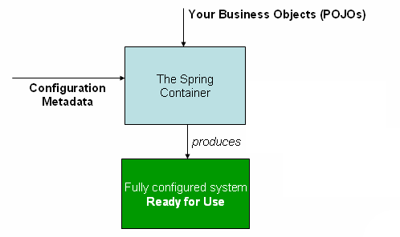

Spring Beatings
or: How I Learned to Stop Worrying and Love the Magic
Getting Started
- First step add Spring core dependency dependency
<properties>
<spring.version>3.2.0.RELEASE</spring.version>
</properties>
<dependency>
<groupId>org.springframework</groupId>
<artifactId>spring-core</artifactId>
<version>${spring.version}</version>
<exclusions>
<exclusion>
<artifactId>commons-logging</artifactId>
<groupId>commons-logging</groupId>
</exclusion>
</exclusions>
</dependency>
AbstractSingletonProxyFactoryBean: Huh?
- Second step of spring configuration: Enable Logging
<properties>
<logback-classic.version>1.0.9</logback-classic.version>
<slf4j.version>1.7.2</slf4j.version>
</properties>
<dependency>
<groupId>ch.qos.logback</groupId>
<artifactId>logback-classic</artifactId>
<version>${logback-classic.version}</version>
<exclusions>
<exclusion>
<artifactId>slf4j-api</artifactId>
<groupId>org.slf4j</groupId>
</exclusion>
</exclusions>
</dependency>
<dependency>
<groupId>org.slf4j</groupId>
<artifactId>slf4j-api</artifactId>
<version>${slf4j.version}</version>
</dependency>
<dependency>
<groupId>org.slf4j</groupId>
<artifactId>jcl-over-slf4j</artifactId>
<version>${slf4j.version}</version>
</dependency>
Brief pause for propaganda
- Favor constructor injection
- Avoid property injection
- Prefer autowiring and component scanning instead of manual configuration
- Annotations > XML
- Prefer Spring's way
Application Context
- Responsible for controlling the creation and lifecycle of the Beans in the application
- Should rarely be referenced to resolve an object
- Creating an application context to consume an xml configuration

Application Context Configuration
- XML files, annotated classes or a mixture of the two can be used
- Annotated configuration files will override xml files
- Example annotated configuration class
@Configuration
class SampleSpringAnnotatedConfiguration {
}
- Example xml configuration file
<?xml version="1.0" encoding="UTF-8"?>
<beans xmlns="http://www.springframework.org/schema/beans"
xmlns:xsi="http://www.w3.org/2001/XMLSchema-instance"
xmlns:beans="http://www.springframework.org/schema/beans"
xsi:schemaLocation="http://www.springframework.org/schema/beans
http://www.springframework.org/schema/beans/spring-beans-3.2.xsd">
</beans>
Application Context Creation
Creating an Application Context With an Xml Configuration
class Main {
public static void main(String[] args) {
def applicationConfig = new ClassPathResource("/applicationContext.xml")
def applicationContext = GenericXmlApplicationContext(applicationConfig)
def service = applicationContext.getBean(Service)
service.run()
}
}
Creating an Application Context With an Annotated Configuration Class
class Main {
public static void main(String[] args) {
def configClass = DemoAnnotationConfiguration.class
def applicationContext = new AnnotationConfigApplicationContext(configClass)
def service = applicationContext.getBean(Service)
service.run()
}
}
Property Source
@Configuration
@PropertySource("classpath:lt/nsg/gms/propertysource/property-source-test.properties")
@ComponentScan(basePackageClasses = PropertySourceTest)
class PropertySourceTestConfiguration {
}
@Component
public class PropertyService {
public static final String MISSING_PROPERTY_DEFAULT_VALUE = "i'm not /really/ here"
private final Environment env
@Autowired
PropertyService(Environment env) {
this.env = env
}
String getPropertyValue() {
return env.getProperty("property.value")
}
String getRequiredPropertyValue() {
return env.getRequiredProperty("property.missing")
}
String getMissingPropertyWithDefaultValue() {
return env.getProperty("property.missing", MISSING_PROPERTY_DEFAULT_VALUE)
}
}
Profiles
@ContextConfiguration(classes = ProfilesTestConfiguration)
@ActiveProfiles("test")
class ProfileTest extends Specification {
@Autowired MissleController misscleControl
def "should get services that are in the test profile"() {
expect: !misscleControl.launch()
}
}
interface MissleController { boolean launch() }
@Component @Profile("production")
class Pentagon implements MissleController { boolean launch() { true } }
@Component @Profile("test")
class MockMissleController implements MissleController { boolean launch() { false } }
@Configuration @ComponentScan(basePackageClasses = ProfileTest)
class ProfilesTestConfiguration {}
Meta Annotations
- Due to what seems to be a bug in groovy an example meta-annotation in java
@Target(ElementType.TYPE)
@Retention(RetentionPolicy.RUNTIME)
@Component
@Profile("test")
public @interface TestComponent {
}
Testing Property Sources
@ContextConfiguration(classes = PropertySourceTestConfiguration)
class PropertySourceTest extends Specification {
@Autowired
PropertyService service
def "should be able to specify a default value if the property is missing"() {
expect:
service.getMissingPropertyWithDefaultValue() == PropertyService.MISSING_PROPERTY_DEFAULT_VALUE
}
def "should read a property from the file"() {
expect:
service.getPropertyValue() == "a property value"
}
def "should throw an exception if required properties can not be found"() {
when:
service.getRequiredPropertyValue()
then:
thrown(IllegalStateException)
}
}
Testing Profiles
@ContextConfiguration(classes = ProfilesTestConfiguration)
@ActiveProfiles("test")
class ProfileTest extends Specification {
@Autowired MissleController misscleControl
def "should get services that are in the test profile"() {
expect: !missleControl.launch()
}
}
interface MissleController { boolean launch() }
@Component @Profile("production")
class Pentagon implements MissleController { boolean launch() { true } }
@Component @Profile("test")
class MockMissleController implements MissleController { boolean launch() { false } }
@Configuration @ComponentScan(basePackageClasses = ProfileTest)
class ProfilesTestConfiguration {}
Final Notes
- The Spring documentation is outstanding
- Fighting the framework will bite you every time
←
→
/
#